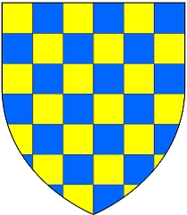

Antavla
192283103 Isabel (Elizabet) de Vermandois
Blev högst 46 år.

Far:
Hugh Capet de Vermandois (1053 - 1102)
Mor:
Adelaide de Vermandois Carolingians (1050 - 1120)
Född:
1085 Valois, France.
[1]
Död:
1131-02-13 England.
[1]
Barn med
192283102 Count Robert de Beaumont (1046? - 1118)
Barn:
Isabel Beaumont of Meulan (1100? - >1178)
Personhistoria
Årtal
Ålder
Händelse
1085
Födelse 1085 Valois, France
[1]
1100?
Dottern
96141551 Countesse Isabel Beaumont of Meulan
föds omkring 1100 Leicester, Leicestershire, England
1102
Fadern
384566166 Count Hugh Capet de Vermandois
dör 1102-10-18 Tarsus, Icel, Turkiet
[2]
1118
Partnern
192283102 Count Robert de Beaumont
dör 1118-06-05 Leicester, Leicestershire, England
[1]
1120
Modern
384566167 Countess Adelaide de Vermandois Carolingians
dör 1120-09-23 Meulan, Yvelines, Frankrike
[2]
1131
Död 1131-02-13 England
[1]
1131
Systern
192283083 Countess Elizabet (Isabel) Capet de Vermandois
dör 1131-02-13 Sens, Saoné-et-Loire, Bourgogne, France
[2]
Källor
[1]
Matematical.com
[2]
Dave Bradley